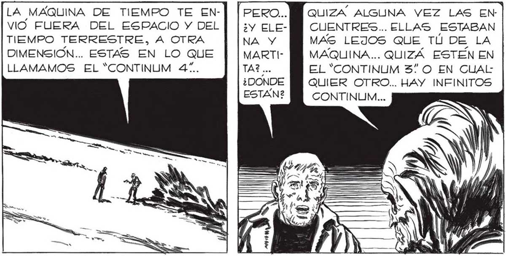
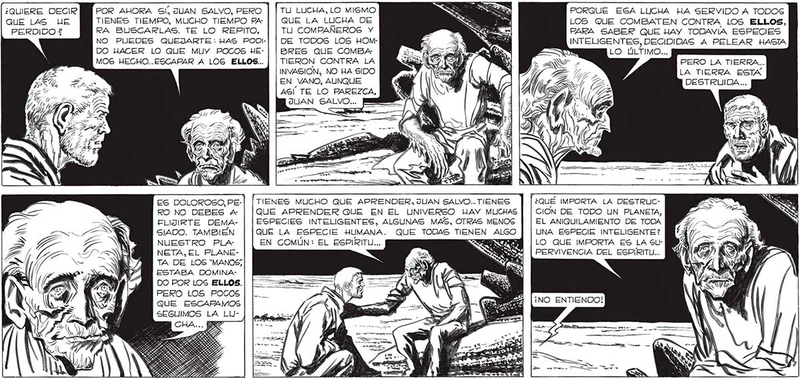

358 HAS CONSEGUIDO LO QUE MUY POCOS... HAS ESCAPA: DO A LOS ELLOS... 4 rm SS => Y > Sonerio, y EL ROSTRO SE LE PLEGO EN MIL ARRUGAS: ERA VIEJISIMO... ¿QUIERE DECIR QUE L%4%S UE PERDIDO ¿ EA » — ¿COMO? ¿QUE ESCAPÉ A LOS ELLOS? | —-ei A SI, JUAN SALVO. AL TRATAR DE PONER EN MARCHA LA COSMO ESFERA, HIlCISTE FUNCIONAR LA MAQUINA DE TIEMPO QUE ES PARTE DE SU MECAPOR AHORA SI, JUAN SALVO, PERO | | TU LUCHA, LO MISMO TIENES TIEMPO, MUCHO TIEMPO PA | | QUE LA LUCHA DE RA BUSCARLAS. TE LO REPITO, TU COMPAÑEROS Y NO PUEDES QUEJARTE: HAS PODI- DE TODOS LOS HOMDO HACER LO QUE MUY POCOS HE- | | BRES QUE COMBA: MOS HECHO..ESCAPAR A LOG ELLOS... | | TIERON CONTRA LA ES DOLOROSO, PE: RO NO DEBES A+ FLIJIRTE DEMASIADO. TAMBIEN NUESTRO PLA NETA, EL PLANETA DE LOS “MANOS; ESTABA DOMINADO POR LOS ELLOS. PERO LOS POCOS QUE ESCARAMOS SEGUIMOS LA LUINVASION, NO HA SIDO EN VANO, AUNQUE AGÍ TE LO PAREZCA, TIENES MUCHO QUE APRENDER, JUAN SALVO... TIENES QUE APRENDER QUE EN EL UNIVERSO HAY MUCHAS ESPECIES INTELIGENTES, ALGUNAS MAS, OTRAS MENOS QUE LA ESPECIE HUMANA. QUE TODAS TIENEN ALGO EN COMÚN: EL ESPIRITU... SES A LA MÁQUINA DE TIEMPO TE EN- QUIZA ALGUNA VEZ LAS ENVIO FUERA DEL ESPACIO Y DEL] |; CUENTRES... ELLAS ESTABAN TIEMPO TERRESTRE, A OTRA MAS LEJOS QUE TÚ DE LA DIMENSION... ESTAS EN LO QUE MAQUINA... QUIZÁ ESTÉN EN LLAMAMOS EL “CONTINUM 4”. EL “CONTINUM 37 O EN CUAL: QUIER OTRO... HAY INFINITOS CONTINUM... PORQUE ESA LUCHA HA SERVIDO A TODOS LOS QUE COMBATEN CONTRA LOS ELLOS, PARA SABER QUE HAY TODAVIA ESPECIES INTELIGENTES, DECIDIDAS A PELEAR HASTA LO ÚLTIMO... PERO LA TIERRA... LA TIERRA ESTA DESTRUIDA... ¿QUÉ IMPORTA LA DESTRUCCION DE TODO UN PLANETA, EL ANIQUILAMIENTO DE TODA UNA ESPECIE INTELIGENTE? LO QUE IMPORTA ES LA S5uLPERVIVENCIA DEL ESPIRITU... ¡NO ENTIENDO!

